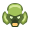
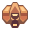
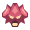
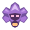

Clack
Rounded beetle shell, hooked pincers and a recessed gold mouth.
DownLeftRight
Six compact enemy silhouettes. Compare the details, then see how each alien reads at its actual 30 × 30 pixel size.

Rounded beetle shell, hooked pincers and a recessed gold mouth.

Flat-sided amber armour wraps a narrow visor and a square jaw.

A jagged crimson mask with split horns and sharply slanted eyes.
A rounded seed shell with soft, bulb-like shoulders.
Paired hooks create a deeper notch on either side of the head.

A pointed crest and scalloped sides make a star-like outline.
Sideways drift, diagonal dive, offscreen wrap, then a curved return to formation.
Upward launch, a curved turnaround, then a downward-facing formation pose.
Perplexity Computer drew the six SVGs directly, using Kestrel and Vesper as visual references. HTML and CSS provide the comparisons; vanilla JavaScript rotates the same SVGs along preview paths. No image or video generator was used.
The complete workshop ZIP also includes the full prompt and production log.